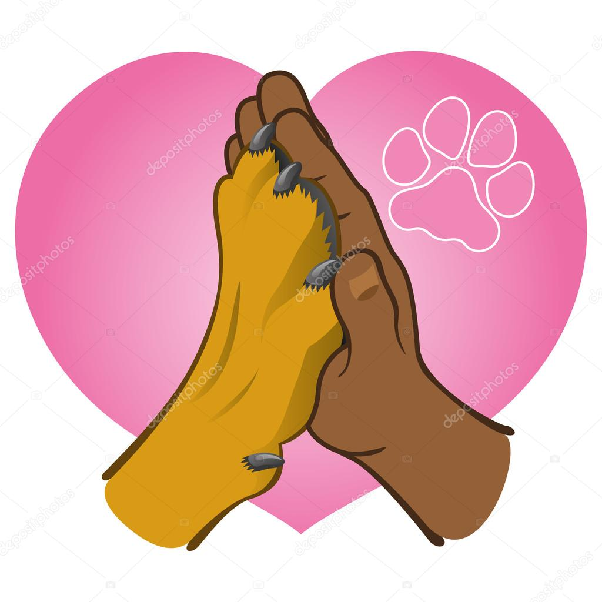

Contato
Entre em contato conosco para obter mais informações sobre adoção, voluntariado ou formas de ajudar os animais resgatados.
📞 Telefone
(11) 97750-1321
contato@adotefacil.com
📍 Localização
Mogi das Cruzes - SP
🕒 Horário de Atendimento
Segunda a Sexta - 10h às 14h